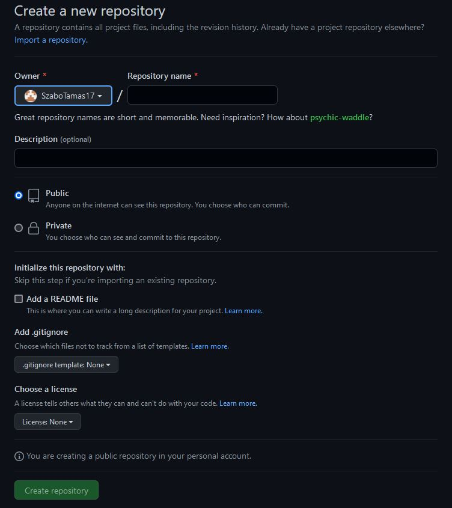

Verziókezelés és kollaboráció Git és Github használatával
Repo létrehozása:
Git és Github használatakor a projektjeinket úgy nevezett "repo" azaz repository-kba rakjuk. Kódunkat repository-kban szortírozzuk, alakítjuk.
Létrehozásukhoz Githubon kell egy fiók, majd azután megkapjuk a lehetőséget hogy létrehozzunk egy repo-t.
